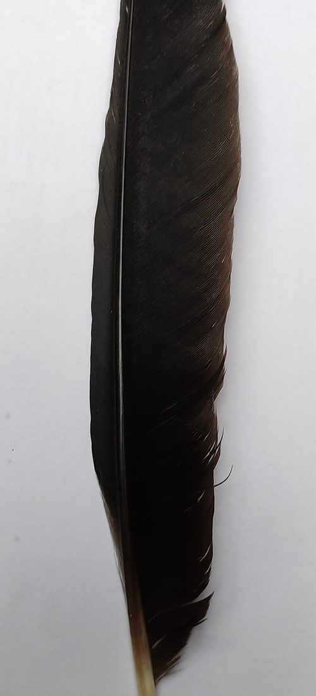
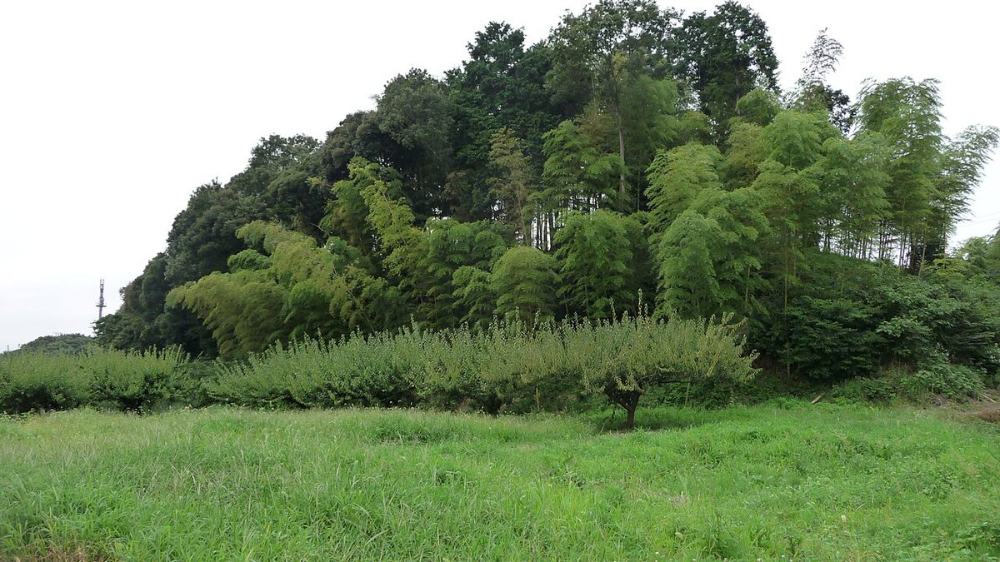
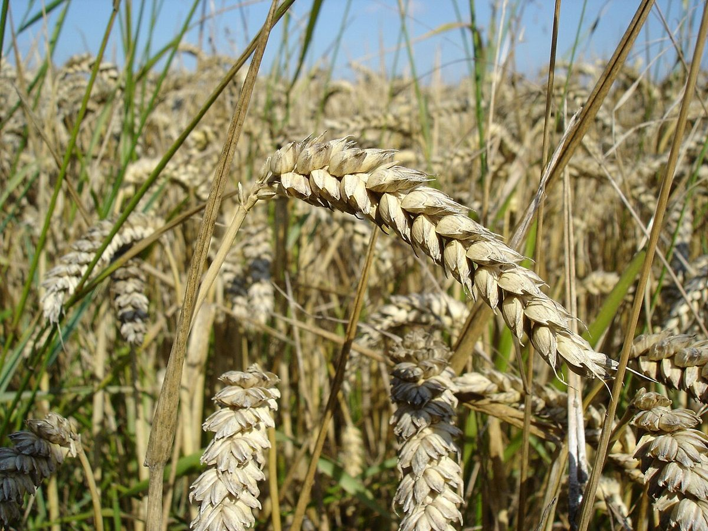
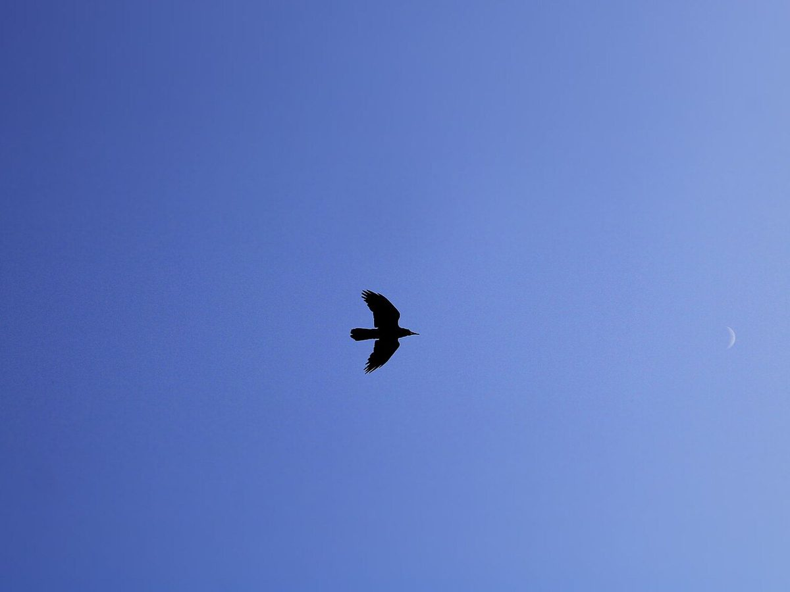
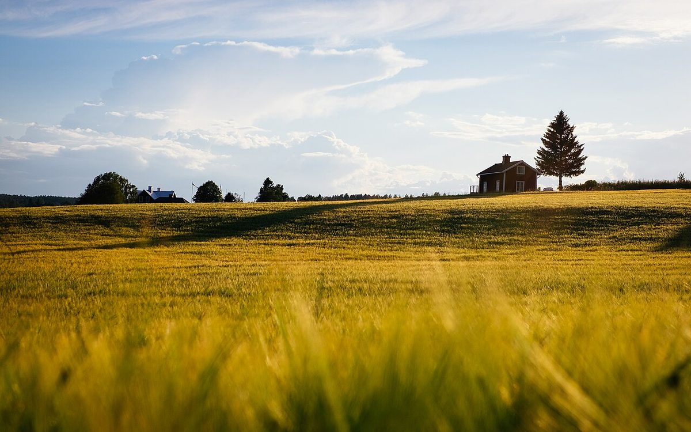
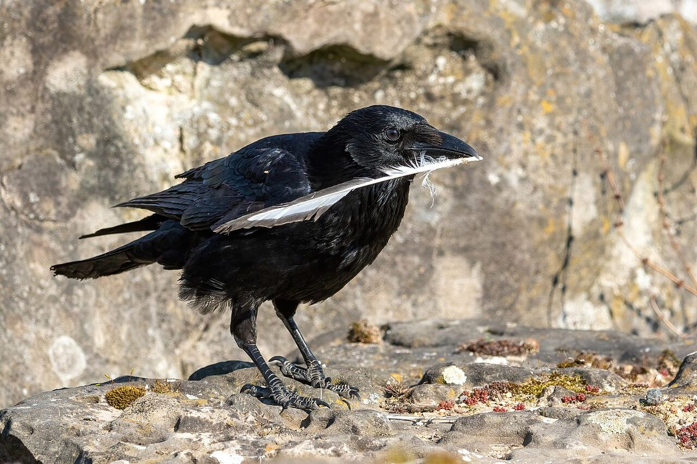

お店について
屋号は「からすのあしあと〜ぱんとおやつのおみせ〜」。栃木県鹿沼市武子にある、パンとおやつのお店です。
本ページは試作サンプルです。

店名のイメージ(制作側の案)
「あしあと」という言葉から、道の途中に足跡が続き、その先にお店がある、という見せ方を考えました。このホームページのデザインも、その連想にもとづく制作側の案です。
店の意図や由来とは異なる場合があります。
こだわり・店主・スタッフ
準備中(お問い合わせください)




